Press and images
Writing about RangerTrak for a newsletter, club, magazine or blog? Everything here is free to use in articles, posts and presentations about RangerTrak. A credit line of “RangerTrak / John Cornelison” and a link to rangertrak.com are appreciated.
Screenshots and graphics
Click a thumbnail to preview it, or a title to open the full-size original. Most screenshots are from RangerTrak 0.99.90-alpha, October 2026, in Full menus; the map and the mission summary are from earlier builds.
-
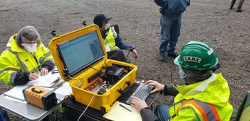
Vashon ACS Team using RangerTrak in a 2022 CERT exercise
A real drill, not the demo: RangerTrak running on a go-box laptop at the command post, with the paper log kept beside it. Please use this caption and don’t add names. 2400×1167 JPEG
-
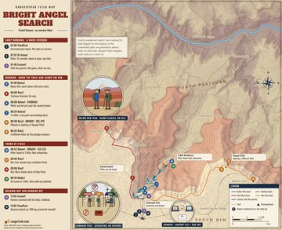
Bright Angel search map
The Grand Canyon demo drawn on real terrain: the radio log, each team's route, and close-ups of the command post, a search team and the handoff. Terrain USGS 3DEP; trails © OpenStreetMap contributors (keep that credit line if you crop). 3200×2600 JPEG
-
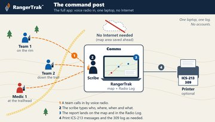
Setup diagram: the command post
The basic setup: teams call in by voice radio, one scribe logs each report on a laptop, RangerTrak maps it, and the printer produces the ICS-213 and the Form 309 Communications Log. No Internet needed once the app and the map area are on the laptop. 2400×1360 PNG
-
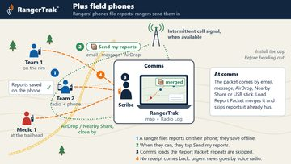
Setup diagram: field phones
A ranger’s own smartphone in field mode files its own reports, then hands them to the command post as a Report Packet, by text or email when there’s signal or directly when close by. The command post merges them in without overwriting anything. 2400×1360 PNG
-
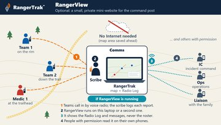
Setup diagram: RangerView (optional)
RangerView is a small, private mini-website for the command post. Others with permission to view it (the IC, Ops, Liaison) can watch the radio log and messages live on their own phones, read-only and without the roster. 2400×1360 PNG
-
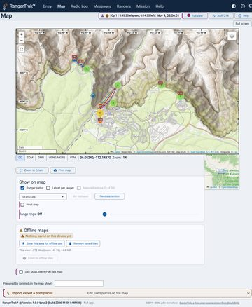
The map
The Grand Canyon demo on the topographic street map: report clusters, Ranger paths, and the Show on map and Offline maps boxes. Map data © OpenStreetMap contributors and OpenTopoMap (CC-BY-SA): keep the attribution line visible if you crop. 1450×1766 PNG
-
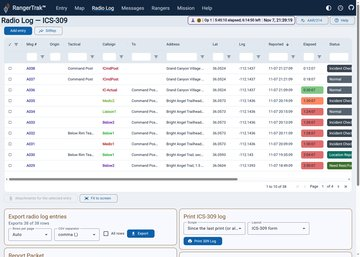
Radio Log (ICS-309)
Every report in one sortable table, with elapsed-time shading and statuses. Prints as a 309 communications log. 2800×2000 PNG
-
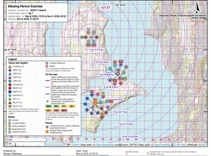
Printed map sheet
Print map, from the Vashon demo (fictional people): title box, a legend listing every team with its number of entries, USNG grid, range rings, edge ticks and a “Prepared by” line. Map data © OpenStreetMap contributors and OpenTopoMap (CC-BY-SA): keep the attribution line visible if you crop. 1470×1088 PNG
-
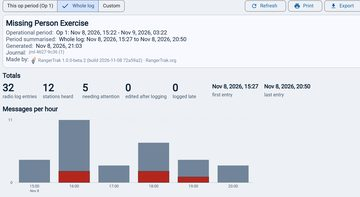
RangerTrak SitRep
The SitRep (a situation report from the radio log), from the Vashon demo (fictional people): the mission header with the RangerTrak version that made it, totals, and messages per hour (those needing attention in red). Runs any time; prints for the after-action review. 2048×1120 PNG
-
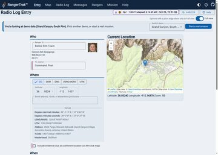
Field report entry
The four questions (who, where, when, what), the position in every coordinate format, and the small map that shows where it landed. 2800×2000 PNG
-
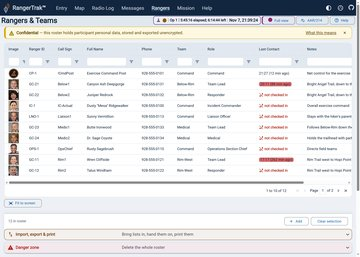
Rangers and teams
The roster, with last-contact times shaded against the check-in interval. 2800×2000 PNG
-
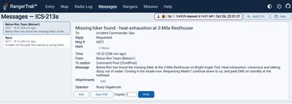
Messages (ICS-213)
An addressed message, ready to print onto FEMA’s own ICS-213 form. Wide; crop to taste. 2800×1000 PNG
-
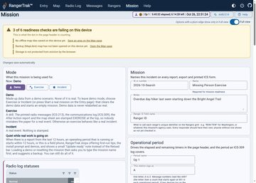
Mission settings
The readiness checks, the mission’s mode (demo, exercise or incident), its name, and the operational period. 2800×2000 PNG
-
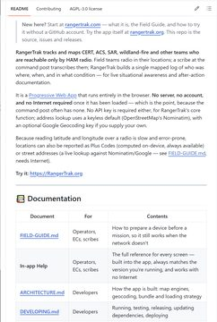
GitHub README
The top of the source repository’s README, for technical audiences. 1284×1914 PNG
-
Logo, full color (transparent)
The full-color mark on a transparent background, for print and articles. 886×1528 PNG
-
Logo, full color (square)
The same mark on a square canvas, for avatars and profile images. 1550×1550 PNG
-
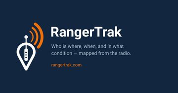
Social card (1200×630)
The card link previews use. Works as a banner or header image. 1200×630 PNG
-
Logo mark (SVG)
RangerTrak’s mark: a location pin with a radio signal. Scales to any size. SVG, any size


In one paragraph
RangerTrak is a free, open-source radio log and map for the scribe at a CERT, ACS/ARES, SAR or wildland-fire command post. It records who is where, when, and in what condition as reports come in over the radio, plots them on a map, and prints the Form 309 Communications Log and ICS-213. It runs in the browser with no server, no account and no API key, and works with no Internet once a device is prepared. Built by John Cornelison (KE7KDQ) on Vashon Island, Washington, and licensed under the AGPL.
Questions, or want a demo for your group? Email RangerTrak [at] steadyeoc [dot] com. Background: Field Notes, the Field Guide, and the app itself at rangertrak.org.